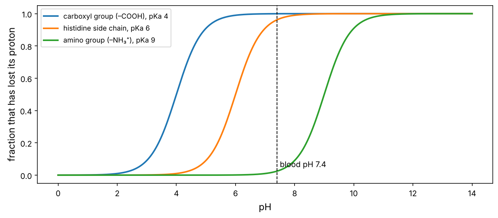
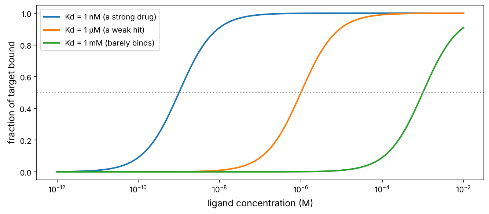

Biology from zero · Chapter P2
The chemistry of life
Atoms, bonds, water, pH and energy, and the four families of big molecules that every cell is built from. Just enough chemistry to understand DNA, proteins and drugs.
Cells are chemistry. DNA is a molecule, proteins are molecules, a drug is a molecule that sticks to a protein. This chapter teaches the handful of chemical ideas you need for the rest of the course: what atoms and bonds are, why water matters so much, what pH is, how molecules stick to each other, and how energy decides which reactions happen.
Like you’re five
Atoms are Lego bricks. A few kinds (mostly carbon, hydrogen, oxygen and nitrogen) click together into molecules. Small molecules click together in long chains to make the big molecules of life: sugars make starch, amino acids make proteins, nucleotides make DNA. Molecules also stick to each other loosely, like magnets, and that loose sticking is how almost everything in a cell happens, including how a drug finds its target.
Atoms: the elements of life
An atom has a tiny, heavy nucleus (protons and neutrons) surrounded by electrons. The number of protons defines the element. Chemistry is entirely about what the outer electrons do.
Six elements make up about 98% of living matter: Carbon, Hydrogen, Oxygen, Nitrogen, Phosphorus and Sulfur ("CHONPS").
import numpy as np
import matplotlib.pyplot as plt
import matplotlib as mpl
from pathlib import Path
mpl.rc("figure", dpi=110); mpl.rc("axes", labelsize=12, titlesize=13)
IMAGES = Path("images"); IMAGES.mkdir(exist_ok=True)
def save_fig(name):
plt.tight_layout(); plt.savefig(IMAGES / f"{name}.png", dpi=150, bbox_inches="tight")
R = {}
# approximate elemental composition of the human body by mass (%)
body = {"O": 65.0, "C": 18.5, "H": 9.5, "N": 3.2, "Ca": 1.5, "P": 1.0, "K": 0.4, "S": 0.3, "Na": 0.2, "Cl": 0.2, "Mg": 0.1, "others": 0.1}
bonds = {"H": 1, "O": 2, "N": 3, "C": 4, "P": 5, "S": 2} # how many covalent bonds each usually forms
for el, pct in body.items():
extra = f" forms {bonds[el]} bond(s)" if el in bonds else ""
print(f"{el:7s} {pct:5.1f}% of body mass{extra}")
O 65.0% of body mass forms 2 bond(s) C 18.5% of body mass forms 4 bond(s) H 9.5% of body mass forms 1 bond(s) N 3.2% of body mass forms 3 bond(s) Ca 1.5% of body mass P 1.0% of body mass forms 5 bond(s) K 0.4% of body mass S 0.3% of body mass forms 2 bond(s) Na 0.2% of body mass Cl 0.2% of body mass Mg 0.1% of body mass others 0.1% of body mass
Oxygen tops the list by mass mainly because you are mostly water. Carbon is the backbone of life because it forms four bonds, so it can build chains, rings and branches of almost endless variety. That is the basis of "organic" chemistry.
Bonds: strong and weak
| Bond | What it is | Strength (kJ/mol) | Role in biology |
|---|---|---|---|
| Covalent | two atoms share electrons | ~350 | holds each molecule together: the DNA backbone, protein chains |
| Ionic | a + charged and a − charged group attract | ~5–20 in water | salt bridges inside proteins; DNA (negative) binding proteins (positive) |
| Hydrogen bond | an H on O or N is attracted to another O or N | ~5–20 | holds the two DNA strands together; shapes proteins; drug binding |
| Van der Waals | brief attraction between any nearby atoms | ~1–4 each | tight packing inside proteins and drug pockets |
| Hydrophobic effect | oily parts are pushed together by water | — | folds proteins, forms membranes, drives most drug binding |
The key insight: covalent bonds build molecules, weak bonds make molecules interact. Weak bonds are individually feeble and constantly breaking and re-forming at body temperature. But many of them together, in exactly the right geometry, give strong and very specific binding. A drug binds its target, and not the other 20,000 proteins, because dozens of weak contacts fit just right, like a key in a lock.
Water: the medium of life
Water (H₂O) is polar: oxygen pulls electrons towards itself, so the O end is slightly negative and the H ends slightly positive. This gives water its special powers:
- It forms hydrogen bonds with itself and with other polar molecules, so it dissolves sugars, salts, amino acids and DNA (hydrophilic, "water-loving", molecules).
- It does not mix with oils and fats (hydrophobic, "water-fearing"). Water molecules prefer bonding to each other, so they push oily molecules together.
That hydrophobic effect is one of the most important forces in biology: it makes cell membranes assemble by themselves, it folds proteins (oily amino acids hide inside), and it is the main driving force for most drug binding (oily parts of a drug tuck into oily pockets of a protein).
Acids, bases and pH
Some molecules release hydrogen ions (H⁺, a bare proton) into water: these are acids. Bases take H⁺ up. The pH measures how many free H⁺ ions there are:
The maths, from scratch
$$\text{pH} = -\log_{10}[\text{H}^+]$$
where $[\text{H}^+]$ is the concentration in moles per litre. pH 7 (neutral) means $[\text{H}^+] = 10^{-7}$ M. Because of the logarithm, each unit is a 10-fold change.
A chemical group that can gain or lose a proton has a $\text{p}K_a$: the pH at which it is half protonated. The Henderson–Hasselbalch equation gives the charged fraction:
$$\text{fraction deprotonated} = \frac{1}{1 + 10^{\,\text{p}K_a - \text{pH}}}.$$
pH = np.linspace(0, 14, 300)
groups = {"carboxyl group (–COOH), pKa 4": 4.0, "histidine side chain, pKa 6": 6.0, "amino group (–NH₃⁺), pKa 9": 9.0}
fig, ax = plt.subplots(figsize=(9, 4))
for name, pka in groups.items():
ax.plot(pH, 1 / (1 + 10 ** (pka - pH)), lw=2, label=name)
ax.axvline(7.4, color="k", ls="--", lw=1); ax.text(7.5, 0.05, "blood pH 7.4")
ax.set_xlabel("pH"); ax.set_ylabel("fraction that has lost its proton"); ax.legend(fontsize=9)
save_fig("henderson"); plt.show()
R["his_frac"] = f"{1 / (1 + 10 ** (6.0 - 7.4)):.0%}"

At blood pH, a carboxyl group is negatively charged (it has lost H⁺), an amino group is positively charged, and a histidine side chain is in between (96% deprotonated). This is why amino acids in proteins carry charges, why DNA (full of phosphate groups) is strongly negative, and why a drug's charge state, which depends on pH, decides whether it can cross an oily cell membrane.
The four families of biological molecules
Life builds big molecules (macromolecules) by linking small units (monomers) into chains (polymers):
| Family | Building block | Polymer examples | Main jobs |
|---|---|---|---|
| Carbohydrates | sugars (glucose) | starch, glycogen, cellulose | fuel, energy storage, structure, cell-surface labels |
| Lipids | fatty acids, glycerol | fats, phospholipids, cholesterol, steroid hormones | membranes, energy storage, signals |
| Proteins | 20 amino acids | enzymes, antibodies, receptors, collagen | almost all the work (chapter P5) |
| Nucleic acids | 4 nucleotides | DNA, RNA | storing and transmitting information (P3, P4) |
Lipids are not true polymers, but they assemble spontaneously into large structures. Phospholipids have a water-loving head and two oily tails. In water they arrange themselves into a bilayer, heads out and tails in. That is the cell membrane: about 5 nm thick, self-assembling, and impermeable to charged and large molecules. Most drugs must cross it, which is why drug chemists care so much about "lipophilicity" (chapter 13).
Binding: how molecules recognise each other
Biology runs on molecules binding to each other: a hormone to its receptor, a transcription factor to DNA, an antibody to a virus, a drug to an enzyme. One number describes how tightly two molecules bind, the dissociation constant $K_d$.
The maths, from scratch
For a target $P$ and a ligand $L$ that bind reversibly, $P + L \rightleftharpoons PL$, the equilibrium is described by
$$K_d = \frac{[P][L]}{[PL]}.$$
Rearranging, the fraction of target that is bound is
$$\theta = \frac{[L]}{[L] + K_d}.$$
When $[L] = K_d$, exactly half the target is bound. A smaller $K_d$ means tighter binding. Typical values: weak, millimolar (mM); good drugs, nanomolar (nM, $10^{-9}$ M); antibodies, picomolar (pM).
L = np.logspace(-12, -2, 400) # ligand concentration, M
fig, ax = plt.subplots(figsize=(9, 4))
for kd, lab in [(1e-9, "Kd = 1 nM (a strong drug)"), (1e-6, "Kd = 1 µM (a weak hit)"), (1e-3, "Kd = 1 mM (barely binds)")]:
ax.semilogx(L, L / (L + kd), lw=2, label=lab)
ax.axhline(0.5, color="0.6", ls=":"); ax.set_xlabel("ligand concentration (M)"); ax.set_ylabel("fraction of target bound")
ax.legend(); save_fig("binding"); plt.show()
conc = 1e-8
R["occ_nm"] = f"{conc / (conc + 1e-9):.0%}"; R["occ_um"] = f"{conc / (conc + 1e-6):.1%}"

At 10 nM, a 1 nM binder occupies 91% of its target but a 1 µM binder only 1.0%. Improving affinity is a central goal of drug design, and Kd (or the related IC50, chapter P13) is the number on which medicinal chemists judge their molecules.
Energy: which reactions happen?
Whether a reaction or binding event happens on its own is decided by the change in Gibbs free energy, ΔG. Negative ΔG means it can proceed spontaneously.
The maths, from scratch
ΔG combines energy and disorder: $\Delta G = \Delta H - T\Delta S$. Here $\Delta H$ is heat released or absorbed (bonds formed or broken) and $\Delta S$ is the change in disorder (entropy).
ΔG and the equilibrium constant are directly linked:
$$\Delta G^\circ = -RT\ln K,$$
with $R = 8.314$ J/(mol·K) and $T$ in kelvin. For binding, $K = 1/K_d$. At body temperature, $RT\ln 10 \approx 5.9$ kJ/mol, so every 5.9 kJ/mol of extra binding energy makes binding 10 times tighter. One good hydrogen bond is worth a few kJ/mol.
RT = 8.314e-3 * 310.15 # kJ/mol at 37 °C
for kd in [1e-3, 1e-6, 1e-9, 1e-12]:
dG = RT * np.log(kd) # ΔG of binding = -RT ln(1/Kd) = RT ln Kd
print(f"Kd = {kd:.0e} M -> ΔG of binding = {dG:6.1f} kJ/mol")
R["dg_nM"] = f"{RT * np.log(1e-9):.0f}"
Kd = 1e-03 M -> ΔG of binding = -17.8 kJ/mol Kd = 1e-06 M -> ΔG of binding = -35.6 kJ/mol Kd = 1e-09 M -> ΔG of binding = -53.4 kJ/mol Kd = 1e-12 M -> ΔG of binding = -71.2 kJ/mol
A nanomolar drug binds with about -53 kJ/mol: roughly the energy of a dozen good weak contacts, but less than a fifth of one covalent bond. Most drugs bind reversibly through weak bonds; a few (such as aspirin and some modern cancer drugs) form a covalent bond with their target.
ATP: the energy currency
Many reactions a cell needs have positive ΔG and won't happen alone: building proteins, pumping ions, moving muscles. Cells couple them to a strongly favourable reaction: breaking ATP (adenosine triphosphate) into ADP and phosphate, which releases about 30–50 kJ/mol under cellular conditions. You turn over roughly your own body weight in ATP every day, regenerating it in mitochondria from the food you eat (chapter P9).
Enzymes speed things up, but don't change ΔG
Even favourable reactions can be extremely slow, because molecules must pass through a high-energy transition state. Enzymes (protein catalysts, chapter P5) lower that barrier, often speeding reactions up a million-fold or more, without changing where the equilibrium lies. Many drugs are enzyme inhibitors.
Try it
The playground has three parts: binding curves for two drugs with adjustable Kd, an interactive pH scale with biological examples, and an equilibrium simulator linking ΔG to how many molecules end up in each state.
Check yourself
- A drug has Kd = 100 nM. At what concentration is half its target bound? (100 nM.)
- pH drops from 7 to 5. How many times more H⁺ is there? (100 times.)
- Why do phospholipids form a bilayer in water? (Their oily tails avoid water: the hydrophobic effect pushes tails together and leaves the polar heads facing water.)
- Binding energy improves by 11.8 kJ/mol. By how much does Kd change? (About 100-fold tighter: two factors of 10.)
Try it
A cell has 10,000 copies of a receptor. A hormone binds it with Kd = 2 nM. Write a function that returns the number of occupied receptors at a given hormone concentration, and find the concentration needed to occupy 9,000 receptors.
Solution
def occupied(L, kd=2e-9, total=10_000):
return total * L / (L + kd)
# solve 0.9 = L / (L + Kd) -> L = 9 * Kd
L90 = 9 * 2e-9
print(f"{occupied(L90):.0f} receptors occupied at {L90 * 1e9:.0f} nM")
9000 receptors occupied at 18 nM
You need 9 × Kd = 18 nM. In general, going from 50% to 90% occupancy takes 9 times more ligand, and 99% takes 99 times more. This is why drugs are often dosed well above their Kd.